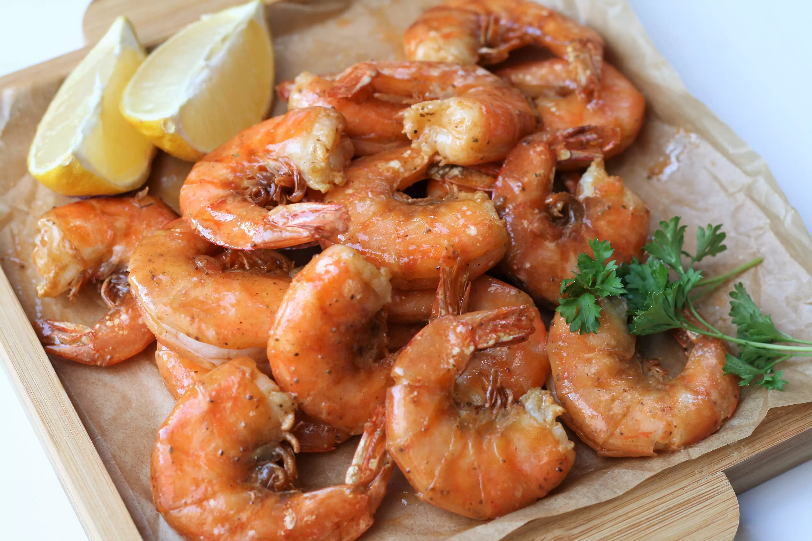

Air Fryer Peel-and-Eat Shrimp from Frozen

Description
Need a last-minute appetizer? These quick and easy peel-and-eat shrimp will be on the table in no time. These "steam" in the shell, which helps keep the shrimp moist. I like to use "extra jumbo" size shrimp, which are 16 to 20 shrimps per pound. Will serve 4 as an appetizer, or 2 as a main entree.
Ingredients
- 1 pound shell-on deveined jumbo shrimp
- Nonstick cooking spray
- 3 tablespoons butter
- 1 tablespoon hot pepper sauce
- 1 teaspoon reduced-sodium seafood seasoning (such as Old Bay®)
- 2 wedges lemon, for serving
Steps
- Preheat an air fryer to 390 degrees F (200 degrees C).
- Quickly rinse shrimp under cold water to remove any ice or sediment. Pat dry with paper towels. Place shrimp in one layer in the basket of the air fryer and lightly mist with cooking spray. You may have to do 2 batches depending on the size of your air fryer.
- Air-fry shrimp for 5 minutes. Flip and continue cooking shrimp until shrimp are bright pink on the outside and the meat is opaque, 3 to 4 minutes longer.
- Meanwhile, place butter in a small microwave-safe bowl. Heat butter at 50 percent power until melted, 30 to 60 seconds. Mix in hot sauce and Old Bay® seasoning.
- Place cooked shrimp into a large bowl. Drizzle with butter mixture and toss to coat. Serve immediately with lemon wedges.
Back